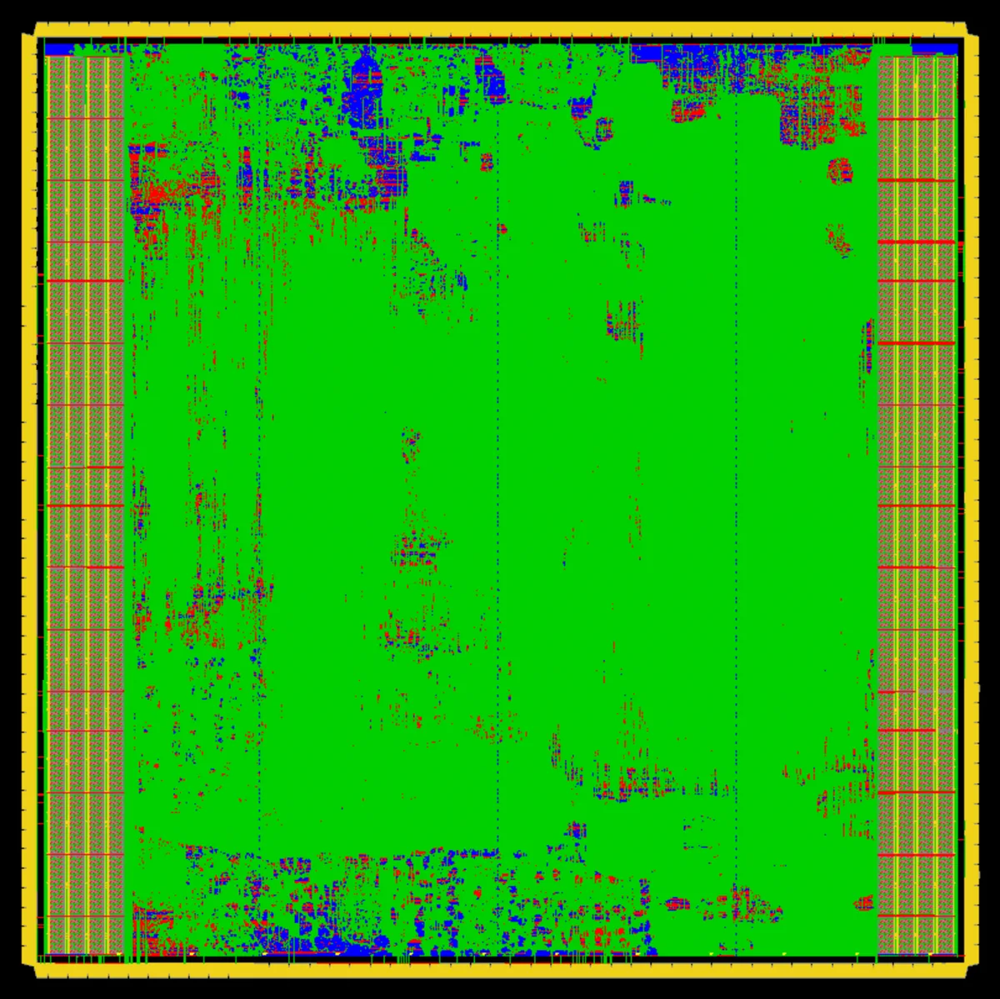
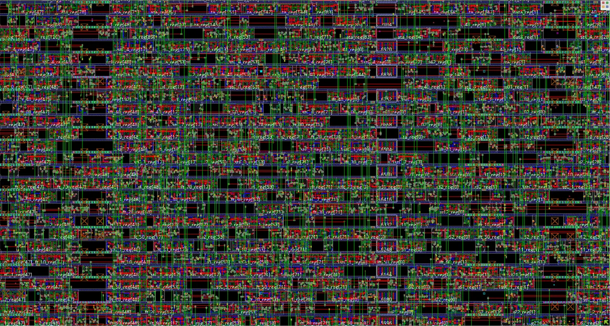
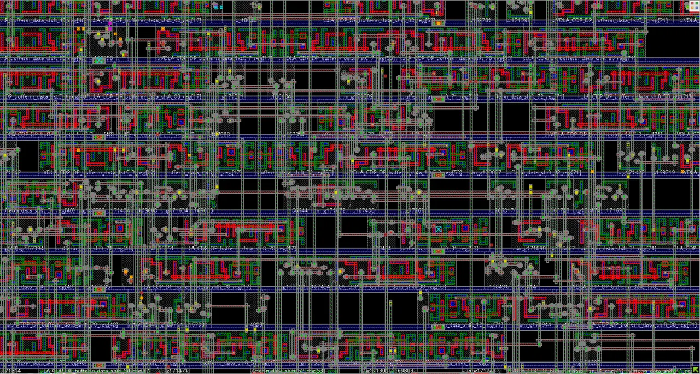

NPU · Physical Design · ASIC
NVIDIA NVDLA RTL-to-GDSII
Implemented and evaluated an open-source NVIDIA deep-learning accelerator through synthesis, timing analysis, power analysis, floorplanning, placement, routing, and physical verification in a 12-nm FinFET flow.
NVDLA (NVIDIA Deep Learning Accelerator) is an open-source hardware accelerator architecture for deep learning inference. I took this on as a self-directed project — outside of coursework, and scoped by me rather than assigned — using tool and PDK access provided through the CMOS Design and Reliability Group, and carried the open-source RTL through a full physical design flow in a 12-nm FinFET process rather than stopping at synthesis or simulation.
The work spanned synthesis, timing analysis, and power analysis at the netlist level, then moved into physical implementation: floorplanning, placement, routing, and physical verification, treating each step's timing and congestion feedback as an input to the next.
Because NVDLA is a substantially larger and more structurally complex design than a typical class-project block, a significant part of the work was in managing the flow itself — partitioning the problem, debugging RTL-to-netlist mismatches, and iterating on timing closure across a design with many more instances and nets than a small benchmark circuit.
| Context | Self-directed project, under group tool and PDK access |
|---|---|
| Design | NVIDIA Deep Learning Accelerator (NVDLA), open-source |
| Process node | 12 nm FinFET |
| Flow stages | Synthesis · Timing analysis · Power analysis · Floorplanning · Placement · Routing · Physical verification |
Floorplan
01 / PHYSICAL DESIGN
The design was partitioned into separate placement regions before detailed placement, each closed independently against its own utilization target (TU) before final assembly — visible here as the six labeled partitions inside the core area, bounded by the I/O pad ring and power distribution rings.
Place & route
02 / INNOVUSThe floorplan above fixes the die geometry; the views below are what comes back out of it. All three are the same routed database at three zoom levels — the whole die, one block of cell rows, and a handful of rows close enough to read individual nets.

The two tiled columns flanking the core are the SRAM macro banks, placed as hard macros with their own power stripes before the standard cells were placed around them. The core itself is filled almost edge to edge; the regions where the colouring breaks up are where cell density and routing demand are highest.

At block level the structure of the placement is readable: standard-cell rows abutting the power rails, sequential elements labelled with their RTL instance names, and routing crossing the rows rather than running inside them. The dark gaps are rows that placement left partly empty — headroom the router used rather than wasted area.

Zoomed far enough in to follow single nets: metal segments on several routing layers, the via stacks that connect them, and pin access on the cells underneath. The instances labelled here belong to the CDP datapath's bufferin_data_shift registers — one small slice of the 6.89 M instances in the design.
Flow
03 / STAGESSynthesis
Mapping the open-source NVDLA RTL to a 12-nm FinFET standard cell library.
Timing & power analysis
Characterizing netlist-level timing paths and power at the block level.
Floorplanning
Partitioning and placing macro and logic regions across the die area.
Placement & routing
Detailed placement and routing of standard cells and interconnect.
Physical verification
Checking the implemented layout for design-rule and connectivity correctness.
Synthesis results
04 / GENUSSynthesized in Genus 23.14 against a 12 nm FinFET low-Vt standard-cell library at the slow-slow process corner with worst-case RC, using physical-library area estimation and global interconnect. The mapped design comes out at 6,892,634 instances across six placement partitions.
The area is not distributed the way the instance counts suggest. u_partition_c holds 13.2% of the instances but 28.3% of the area — the largest share of the six — because it contains CBUF, the convolution buffer. CBUF is 94,024 instances, 1.4% of the design by count, yet takes 19% of total design area, since it is built almost entirely from SRAM macros rather than standard cells.
That shows up again in the cell-area breakdown: 128 dual-port SRAM macro instances, across two configurations, account for 24.2% of all cell area. Power splits the other way: internal switching dominates at 58% of the total, net switching contributes 39%, and leakage 3.4%.
Area and power are reported as shares of the design total rather than in mm² and watts. See Disclosure.
| Tool | Genus 23.14-s090_1 |
|---|---|
| Library | 12 nm FinFET standard-cell library, low-Vt |
| Corner | Slow-slow process, worst-case RC, 125 °C |
| Cell vs net area | 71% / 29% of total |
| SRAM macros | 128 instances, 24.2% of cell area |
| Reported figures | Normalized to design total |
| Partition | Instances | Instance share | Area share | Power share |
|---|---|---|---|---|
| u_partition_o | 1,942,960 | 28.19% | 24.5% | 27.3% |
| u_partition_p | 1,245,049 | 18.06% | 15.1% | 18.4% |
| u_partition_a | 975,643 | 14.15% | 11.3% | 11.8% |
| u_partition_ma | 910,060 | 13.20% | 10.3% | 12.2% |
| u_partition_mb | 910,060 | 13.20% | 10.3% | 12.5% |
| u_partition_c | 908,862 | 13.19% | 28.3% | 17.8% |
| NV_nvdla | 6,892,634 | 100% | 100% | 100% |
Disclosure
05 / SCOPEOpen to walk through
- Flow architecture end to end: hierarchical per-partition synthesis, MMMC setup, constraint and corner strategy, and how each stage's feedback fed the next.
- Why the partitioning came out the way it did, and what CBUF's macro content does to the area and utilization balance.
- Floorplan iteration: how
u_partition_carrived at 194% utilization, what that forced, and how the region was resized to place and route. - Memory compiler integration — replacing NVDLA's behavioural RAM models with hard-macro views to unblock synthesis and place-and-route.
- Every relative figure on this page: instance counts, area and power shares, cell-type breakdown, and how they were extracted.
Not published here
- Absolute area in mm² and absolute power in watts. Against a named library these describe the process, not the design, so they are given as shares of the design total instead.
- The foundry and PDK revision, library and cell names, and memory-compiler configuration strings.
- Timing reports, constraint files, technology LEF and library data, and any GDS.
The RTL is NVIDIA's open-source NVDLA. The implementation was carried out under licensed academic access to a 12 nm FinFET PDK, so figures that would characterize the process library rather than the design are normalized throughout. Nothing above is withheld to obscure the result — the relative numbers carry the whole argument, and the methodology is open to discussion in full.